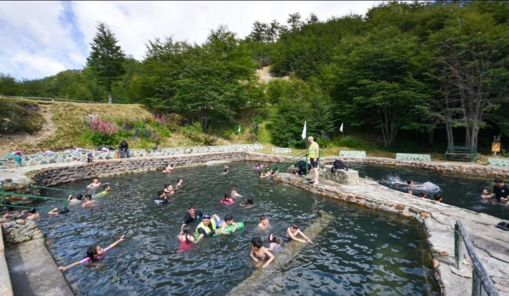
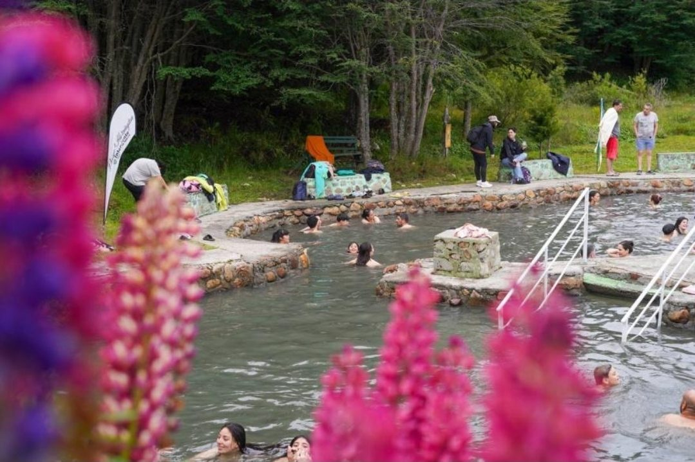
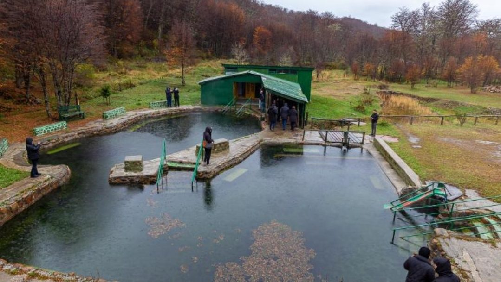
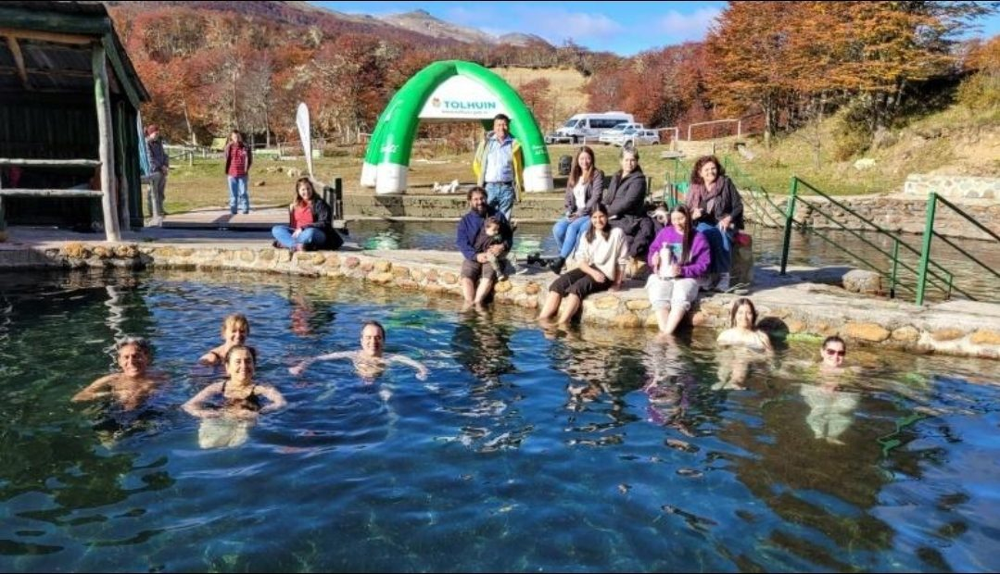

El lugar
Las Termas de Tolhuin, también conocidas como Termas del Río Valdez, están en la provincia de Tierra del Fuego, Argentina.
Ubicación
Se encuentran a unos 30 km de la ciudad de Tolhuin, a orillas del Río Valdez y rodeadas de bosque fueguino.
Cómo llegar
Desde Tolhuin se toma la Ruta Nacional N.º 3 y luego el acceso hacia las Termas del Río Valdez. Podés ir en vehículo particular o con un servicio de traslado habilitado.
Qué hacer
- Disfrutar de las aguas termales
- Relajarse y descansar
- Contemplar el paisaje natural
- Recorrer y conocer el entorno
- Observar la flora y fauna de la zona
- Sacar fotografías del paisaje
Así se ve




Antes de ir
- Llevar traje de baño, toalla y ropa de abrigo
- Reservar el turno antes de asistir
- Respetar las indicaciones del personal
- Cuidar el ambiente y no dejar residuos
- Mantenerse hidratado y hacer descansos durante el baño
- Consultar antes los horarios y condiciones de acceso